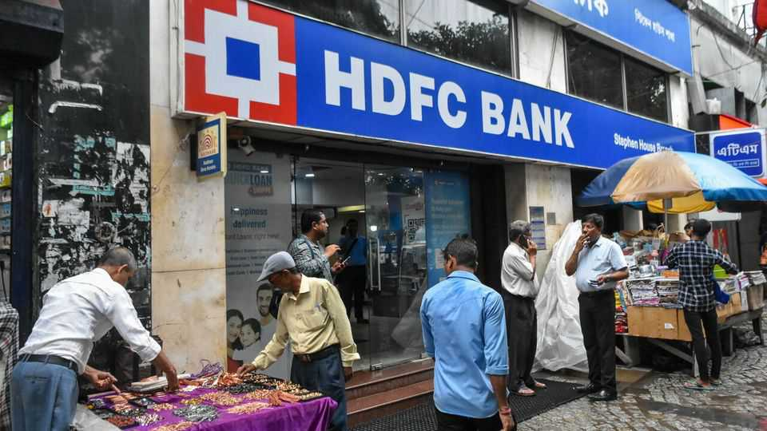

The task facing the new head of India’s biggest private bank
HDFC Bank needs revitalising

Oct 29th 2026
HDFC Bank started on a shoestring. In its first makeshift office, in a textile mill in Mumbai in 1995, rats gnawed at computer cables taped to the floor. Paper clips were meticulously accounted for. Staff held meetings under a peepal tree. Even as the bank grew, they were asked to bring in their own tea mugs.
Such prudence paid off. HDFC Bank soon became a formidable institution, known for efficiency, conservative lending, tight control of bad loans and steady profits. It is now India’s biggest private lender. But when Anup Bagchi, its new chief executive, took charge on October 27th, he inherited a difficult legacy.
In 2023 a $40bn merger with Housing Development Finance Corporation (HDFC), a related housing-finance giant, created one of the world’s largest banks. The logic was compelling. HDFC Bank’s cheap current- and savings-account deposits could help fund HDFC’s vast mortgage book, which had relied on dearer bonds, bank loans and longer-term deposits. The enlarged bank could also cross-sell home loans, cards and insurance to a bigger customer base.
Reality proved harder. The loan-to-deposit ratio jumped from 85% to 108%, raising funding costs and then squeezing the net interest margin. Liquidity requirements obliging banks to park deposits at the Reserve Bank of India (RBI) and in government bonds became more onerous (as a mortgage lender HDFC had been exempt from some stricter rules applied to banks).
Broader forces affecting all banks added to the strain. Savers began moving money from low-yielding bank accounts to mutual funds on user-friendly apps, forcing banks to be more generous. And in February 2025 the RBI began cutting its policy rate after holding it steady for two years. (The central bank reversed course only this month.) While loan rates fell, banks were still paying higher deposit rates locked in earlier, explains Nitin Aggarwal of Motilal Oswal, a financial-services firm.
Some also questioned HDFC Bank’s governance. They included Atanu Chakraborty, its own chairman, who quit in March citing differences over “values and ethics”. (The RBI found no evidence of misconduct.) In July HDFC Bank’s board fined three executives 100,000 rupees ($1,050) each after the bank reportedly channelled 450m rupees to a state road-building agency, ostensibly to sponsor a safety campaign. The sum allegedly matched the gap between the formal deposit rate and the higher rate promised to the agency.
The share price has fallen by a third in the past year. But not all is gloom. In the year to September loans were up by 16% and deposits by nearly 19%, helped by an RBI scheme to attract foreign-currency deposits. In the latest quarter net profit rose by 5% year on year, to 195bn rupees. The return on equity (a gauge of profitability) was 14%—not shabby, but down from 17% the year before the merger.
So how should Mr Bagchi start earning his annual pay-packet of up to $3.7m? “Changing the culture and replenishing the talent pool” should be priorities, reckons Tamal Bandyopadhyay, author of two books on HDFC Bank. “The top and medium tiers of the bank have been faction-ridden in the past few years.” Many “victims of the cross-fire” quit, he says.
Mr Bagchi spent 34 years at the ICICI group, HDFC Bank’s fiercest competitor. He ran ICICI’s securities and life-insurance arms and helped build its banking franchise. But the turnaround could be a long one. Big bank consolidations show that “a larger balance-sheet alone does not guarantee stronger returns,” says Devang Rajkotia of Moody’s, a rating agency. A banker who has pitched to Mr Bagchi praises his “attention to detail”. He will need it. ■